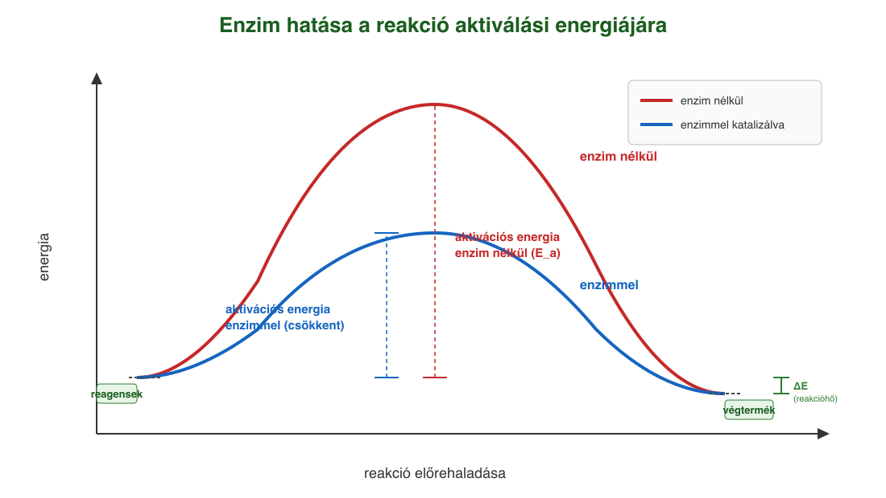
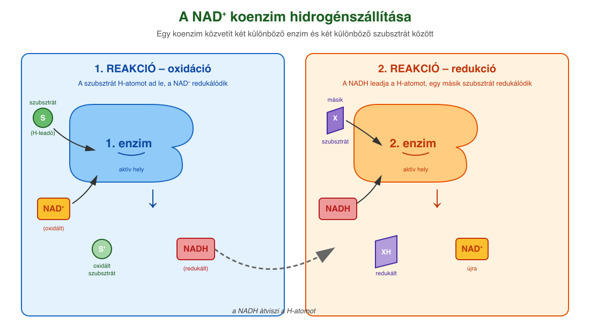
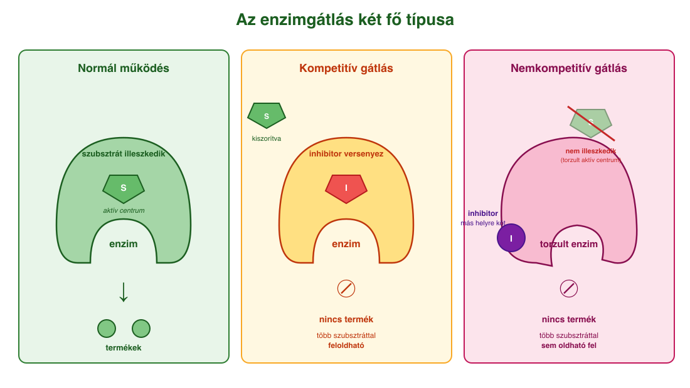

10. Enzimek¶
Az enzimek felépítése és szerepe¶
A kémiai reakciók feltétele, hogy a reagáló anyagok részecskéi (atomok, molekulák) ütközzenek. Adott hőmérsékleten a részecskék rendezetlen mozgást végeznek (hőmozgás), mozgási sebességük egyenesen arányos a hőmérséklettel. A kémiai kötések felszakításához és új kötések kialakításához energia szükséges – ezt az energiagátat aktiválási energiának (Eₐ) nevezzük. Laboratóriumi körülmények között a hőmérséklet növelésével lehet ezt biztosítani, élő szervezetekben azonban a 37 °C körüli testhőmérsékleten nem áll rendelkezésre annyi energia, amennyi a kötések felszakításához kellene – a biokémiai reakciók maguktól nem mennének végbe. Ennek ellenére a reakciók zavartalanul lejátszódnak, mert az élőlényekben biokatalizátorok, az enzimek működnek.
Az enzimek olyan, elsősorban globuláris fehérjék, amelyek a biokémiai reakciókat oly mértékben felgyorsítják, hogy azok a testünk hőmérsékletén is megfelelő sebességgel mennek végbe. Ezt úgy érik el, hogy a reakció számára alacsonyabb aktiválási energiájú új utat nyitnak. Saját szerkezetük közben változatlan marad, így az enzim újra felhasználható.
Aktív centrum és szubsztrát¶
Az enzim felületén egy zsebszerű hely található – ez az aktív centrum (kötőzseb) –, ahova az átalakuló anyag, a szubsztrát bekötődik. Az enzimek reakcióspecifikusak és fajlagosak: minden enzim csak meghatározott szubsztrátot ismer fel, mivel a kötőzseb felépítése specifikus, szerkezete kiegészítő (komplementer) a szubsztrátéval.
- Kulcs-zár modell: a szubsztrát úgy illeszkedik az aktív centrumba, mint a kulcs a zárba. Merev struktúrát feltételez.
- Indukált illeszkedés: a szubsztrát bekötése módosítja az enzim szerkezetét, és ezzel növeli a katalitikus aktivitását is.
Az enzim–szubsztrát-komplex átalakulása után termékek keletkeznek, az enzim pedig változatlanul visszanyeri eredeti formáját.
Az enzimaktivitás és környezeti tényezők¶
Az enzimaktivitás megmutatja, hogy adott idő alatt adott mennyiségű enzim mennyi szubsztrátot képes átalakítani. Az aktivitás függ:
- Hőmérséklet: kis emelkedés gyorsít, de 41 °C felett a fehérje térszerkezete annyira megváltozik, hogy az enzim képtelen ellátni feladatát – ezért a magas láz életveszélyes. Ez a denaturáció, általában visszafordíthatatlan.
- pH (kémhatás): minden enzimnek van optimális pH-ja. A pH-eltolódás megváltoztatja a fehérje töltésviszonyait, és felszakítja a polipeptidláncot stabilizáló kötéseket.
- Ionkoncentráció.
- Nehézfém-ionok (Pb²⁺, Hg²⁺) és mechanikai hatások szintén denaturálhatják az enzimet.
Enzimgátlás¶
Az enzimaktivitás mértékét csökkentő anyagokat inhibitoroknak (enzimgátlóknak) nevezzük. Az inhibitoroknak többféle típusát ismerjük. Egyik csoportjuk a versengő (kompetitív) inhibitorok, melyek a szubsztráthoz hasonló szerkezetük révén képesek bekötődni az enzim aktív centrumába, elfoglalva azt. Amennyiben inhibitor jelen van, az enzim képtelen a szubsztrát megkötésére, inaktívvá válik. Az enzimaktivitás mértékét a szubsztrát-, illetve az inhibitor-koncentráció viszonyai határozzák meg, ezek versengenek az aktív centrumban való megkötődés lehetőségéért. Az enzimek csak átmenetileg vesznek részt a reakcióban, maradandó változást nem szenvednek, újra felhasználhatók.
Egyszerű és összetett enzimek; kofaktorok¶
- Egyszerű enzimek csak aminosavakból épülnek fel.
- Összetett enzimek működéséhez egy nem fehérjetermészetű kiegészítő alkatrész, a kofaktor is szükséges.
A kofaktorok típusai:
- Prosztetikus csoport: szorosan, kovalensen kötődik az enzimhez, eltávolítása az enzim biológiai funkciójának megszűnésével jár. Többnyire fémion (Cu²⁺, Zn²⁺, Fe²⁺), amely az aktív centrum térszerkezetéhez szükséges.
- Koenzim: olyan nem fehérjetermészetű vegyület – kofaktor –, amely lazán, reverzibilisen kötődik az enzimekhez. Többnyire nukleotidszármazék. A koenzimek általában szállítómolekulák, a szubsztrátok közötti csoportátviteli reakciókban szerepelnek, mint pl. a NAD⁺, NADP⁺, melyek hidrogénatomok átvitelében játszanak szerepet. A koenzimek felépítésében gyakran vesznek részt vitaminjellegű csoportok, ezért a vitaminhiány gátolja a koenzimek felépülését. A NAD⁺ felépítésében például a B₃-vitamin vesz részt.
A NAD⁺ mint hidrogénszállító koenzim működése két lépésben zajlik: az 1. enzim a szubsztráttal (elektron-leadó) és a koenzim oxidált formájával (NAD⁺) reagál, eközben a koenzim redukálódik (NADH keletkezik). Ezután a NADH a 2. enzimhez kötődve elektronfelvevő szubsztrátot redukál, így a koenzim újra NAD⁺-szá oxidálódik. A két reakcióban két különböző enzim vesz részt.
Enzimek példái az anyagcserében¶
- Na⁺-K⁺ pumpa (ATP-áz): az állati sejtek legfontosabb ionpumpája. 1 ATP hidrolízisével 3 Na⁺-t pumpál ki és 2 K⁺-t visz be a sejtbe; energiaigényes, mert az ionmozgások a koncentrációgradiensekkel ellentétesek.
- Miozin: izomszövetek ATP-bontó enzime. A felszabaduló energia a fehérjefonalak elcsúszását, vagyis az izom-összehúzódást hajtja.
- ATP-szintázok: olyan enzimek, amelyek a különféle folyamatokban felszabaduló energiát képesek ATP előállítására fordítani. Az ATP a lebontó anyagcsere során keletkezik, pl. a glikolízisben, illetve a terminális oxidációban. A terminális oxidáció egy elektronszállító rendszer működésével valósul meg, mely a mitokondriumok belső membránjában található.
Enzimhiányos emberi betegségek¶
Sok betegség hátterében egy adott enzim hiánya vagy elégtelen működése áll:
- Tejcukor-érzékenység (laktózintolerancia): a laktáz enzim hiányában a laktóz a vékonybélben nem tud monoszacharidokká bomlani, így nem szívódik fel, és a vastagbélbe kerülve különféle problémákat okoz. A vastagbélbe kerülő laktóz erősen növeli a béltartalom ozmotikus koncentrációját, szívóerejét, miáltal csökkenti a vízfelszívódás mértékét, továbbá a vastagbélben zajló bakteriális erjedés következtében különféle szerves savak és gázok (H₂, CO₂) keletkeznek, melyek erőteljesen fokozzák a bélperisztaltikát. Mindezek eredményeképpen a széklet jelentősen hígul, ami a hasmenés elsődleges oka. A tünetek mértékét a laktózbevitel csökkentésével (pl. laktózmentes tejtermékek fogyasztásával) lehet mérsékelni.
- Fenilketonúria (PKU): autoszómás, recesszíven öröklődő betegség. A fenilalanin-hidroxiláz enzim hiánya miatt a fenilalanin nem alakul tirozinná, hanem mérgező anyagcseretermékek halmozódnak fel a vérben → idegrendszeri károsodás, értelmi fogyatékosság. Kezelése a fenilalaninszegény diéta.
Ábrák¶

Egy reakció energiadiagramja enzim nélkül (piros görbe) és enzimmel (kék görbe). Az enzim alacsonyabb aktiválási energiájú új reakcióutat nyit; a reagensek és a végtermék energiája, valamint az összes leadott energia ugyanaz – csak gyorsabban éri el a rendszer az egyensúlyt.

A NAD⁺ mint hidrogénszállító koenzim. 1. reakció: az 1. enzim a szubsztrátról hidrogént vesz el, az oxidált koenzim (NAD⁺) redukálódik NADH-vá. 2. reakció: a NADH a 2. enzimhez kötődve átadja a hidrogént egy másik szubsztrátnak, és visszaalakul NAD⁺-szá. Két különböző enzim, egy közös koenzim közvetít közöttük.

Bal oldalon a normál enzim-szubsztrát kapcsolódás: a szubsztrát illeszkedik az aktív centrumba, és termékek keletkeznek. Jobb oldalon a versengő (kompetitív) gátlás: az inhibitor a szubsztráthoz hasonló szerkezetű, ezért képes bekötődni az aktív centrumba, és elfoglalja azt; a szubsztrát kiszorul, az enzim inaktívvá válik. Az enzimaktivitást a szubsztrát- és az inhibitor-koncentráció viszonya határozza meg.
Az anyag az 1. tankönyv 34, 35, 36, 37. oldalain található.